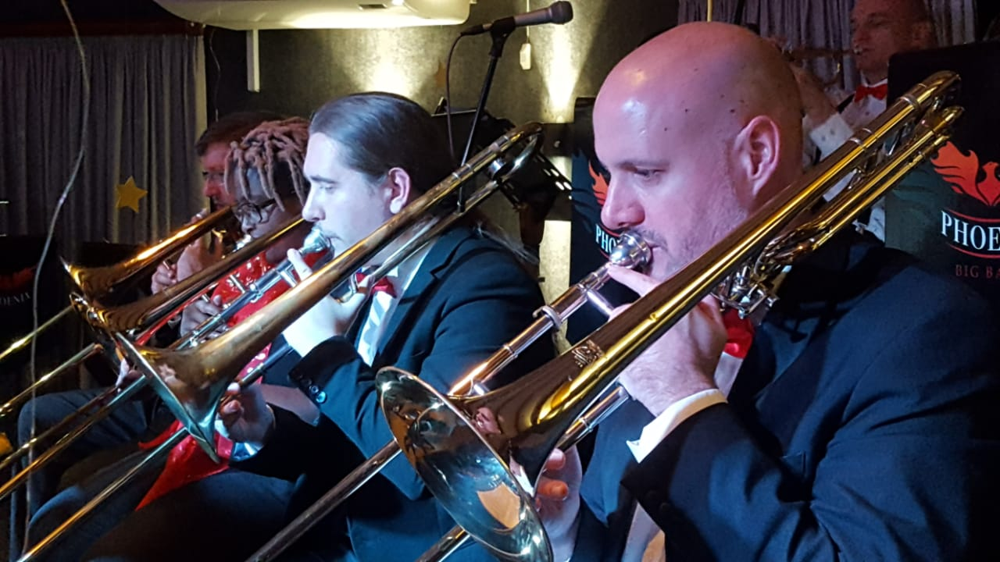

My current research under the TRAIL MSCA project investigates the intersection of explainability, human-robot interaction and knowledge representation. I am verey interested in how robots can represent cognitive and environmental processes, reason over them and communicate with humans. This is driven by the desire to create robots that respect the autonomy of users, where effective robot communication can assist users in maintaining comfort and control in their interactions with robotic systems. On the application side of things, my particular area of interest is in using assistive robots to facilitate "ageing in place", where robots can assist older adults in domestic settings.
Feel free to peruse my publications.
As a proudly South African researcher, I am always conscious of the great challenges facing roboticists in Africa when compared to those working in the "developed" world. For this reason, I have been active in several initiatives aimed at promoting robotics in Africa and helping African voices in the field reach a global audience. I have co-organised several editions of the Workshop on Robotics and Automation in Africa (2023, 2024, 2025) and the ICRA@40 satellite conference. I am also a founding member of the Akili African Robotics Community (watch this space).

Outside of work, one of my greatest passions is music, and I have played various musical instruments all my life. I consider my main instrument to be the trombone, in which I achieved an ABRSM Grade 8 with distinction, and have played the trombone for performances with the Phoenix Big Band, St John's College Choir, the WA Mozart Choir, the Rand Symphony Orchestra, the Johannesburg Symphony Orchestra, Off the Record and the UP Youth Choir.
Aside from the trombone, I have achieved varying levels of proficiency with the bodhrán, penny whistle and guitar, and have dabbled in plenty of the multitude of other instruments that I have lying around.
My other interests include cooking, TTRPGs, history, linguistics, sustainable living and mutual aid.